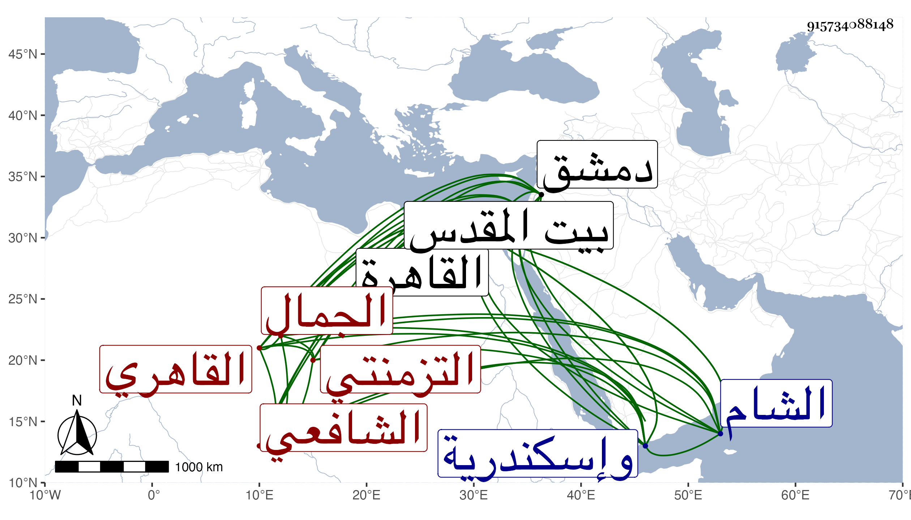

0902Sakhawi.DawLamic.ITO20230111-ara1.EIS1600.915734088148
Biography ID: 915734088148
1244
يوسف بن محمد بن أحمد الجمال التزمنتي ثم القاهري الشافعي ويعرف بابن المجبر نسبة لصدقة المجبر لكونه خلف أباه على أمه فرباه . ولد تقريبا سنة سبعين وسبعمائة بالقاهرة ونشأ بها فحفظ القرآن وكتبا وعرض على جماعة وتفقه بالبلقيني وابن الملقن ولازم العز بن جماعة مدة فانتفع به في النحو والأصول وغيرهما وسمع كما أخبر علي التقي بن حاتم صحيح البخاري وكما في الطبقة على الشرف ابن الكويك صحيح مسلم بفوت ، وحج وزاد القدس والخليل ودخل دمشق وإسكندرية وغيرهما وتصدى للتدريس فانتفع به الطلبة وباشر مشيخة سعيد السعداء نيابة عن الشهاب بن المحمرة حين توجهه إلى الشام قاضيا عليه ثم وثب عليه فيها فلما عاد الشهاب انتزعها منه ، وكان إماما خيرا فقيها فاضلا متثبتا بل صار معدودا في أعيان الشافعية بالقاهرة ولشدة صداقته بالعلمي البلقيني ناب في القضاء عنه وصار يحضر معه مجالس الحديث بالقلعة ولذا قال شيخنا :
| دعاوى فاعل كثرت فسادا | ومن سمع الحديث بذاك يخبر |
| ولولا إنه خشي انكسارا | لما طلب الإعانة بالمجبر |
وقد ذكره شيخنا في إنبائه فقال كان فاضلا اشتغل كثيرا ودار على الشيوخ ودرس في أماكن وناب في الحكم عن القاضي علم الدين وكان صديقه وقد حصل له في حدود سنة خمس وأربعين وجع في رجليه أضربه وأظهر عليه الهرم ولم يزل به حتى انقطع في بيته بجامع المارداني إلى أن مات في ليلة الجمعة منتصف رجب سنة سبع وأربعين بالقاهرة وقد جاز السبعين رحمه الله وإيانا .
